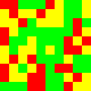

2013-04-15: A* Search in Racket
The source for this post is online at 2013-04-15-astar.rkt.
After the fun I had with the last few posts on basic graph algorithms, this week we’ll implement a generic A* search algorithm in Racket.
-
A* Search uses a best-first search through a graph to find the least-cost path from an initial node to one goal node. It is based on an optimistic heuristic of the cost from each node to the goal. A common heuristic is something like Euclidean distance when the nodes represent a plane.
1 Search interface
Our first step will be to specify the interface between the search algorithm and the graph. Nodes must have a way of enumerating their edges. Edges must have a source, cost, and destination:
(define-signature graph^ (node? edge? node-edges edge-src edge-cost edge-dest))
We can’t express this in the interface, but nodes must be comparable with equal?.
Each search on a class of graphs will be further parameterized by a node-cost function that will return the estimate of the cost from the given node to the goal and an initial node.
2 A basic instance
As a basic instance of this problem, we’ll take an NxN grid where a random sample of cells are given the characteristic: plains (0), woods (1), or mountains (2).
(define (make-map N) (build-matrix N N (λ (x y) (random 3))))
We will represent nodes in the search space as XY-coordinates and edges as displacements in a particular map.
It will cost 1 to move into plains, 5 to move into woods, and 10 to move into mountains.
(define (edge-cost e) (match-define (map-edge _ _ _ (map-node M x y)) e) (match (matrix-ref M x y) [0 1] [1 5] [2 10]))
We will compute the edges in an obvious way, with no diagonal movement:
(define (node-edges n) (match-define (map-node M x y) n) (append* (for*/list ([dx (in-list '(1 0 -1))] [dy (in-list '(1 0 -1))] #:when (and (not (and (zero? dx) (zero? dy))) (or (zero? dx) (zero? dy)))) (cond [(and (<= 0 (+ dx x) (sub1 (matrix-num-cols M))) (<= 0 (+ dy y) (sub1 (matrix-num-rows M)))) (define dest (map-node M (+ dx x) (+ dy y))) (list (map-edge n dx dy dest))] [else empty]))))
We can put it all together like this:
(define-unit map@ (import) (export graph^) (define node? map-node?) (define edge? map-edge?) (define edge-src map-edge-src) (define edge-dest map-edge-dest) <map-graph-cost> <map-graph-edges>)
When we make a search query, we’ll have to additionally specify the initial node and the cost estimate. For our estimate, we’ll use the Manhattan distance (because we know we cannot move in diagonals) to the goal X and the goal Y:
(define ((make-node-cost GX GY) n) (match-define (map-node M x y) n) (+ (abs (- x GX)) (abs (- y GY))))
As an example test case, we can compute the shortest path from (0,0) to (9,9) in a random 10x10 graph:
(define N 10) (define random-M (make-map N)) (define random-path (time (A* map@ (map-node random-M 0 0) (make-node-cost (sub1 N) (sub1 N)))))
3 The algorithm
The overall structure of the function will be:
(define (A* graph@ initial node-cost) (define-values/invoke-unit graph@ (import) (export graph^)) (define count 0) <a-star-setup> (begin0 (let/ec esc <a-star-loop> #f) (printf "visited ~a nodes\n" count)))
After opening up the unit to get access to the function, we’ll set up the data structures, run in a loop for some time (potentially returning to esc on success), before otherwise failing, and printing a statistic in any case.
The algorithm revolves around two data-structures: the closed set and the open set.
The closed set represents the nodes that we have visited and is a pair of hash tables storing their best path (stored in reverse) and its cost.
(define node->best-path (make-hash)) (define node->best-path-cost (make-hash)) (hash-set! node->best-path initial empty) (hash-set! node->best-path-cost initial 0)
We assume that we have implict access to the initial node and, thus the cost to it is zero.
The open set represents the nodes that we must visit and is stored as a priority queue where the priority of node n is the cost of the best path to n plus the estimated cost from n to the destination.
(define (node-total-estimate-cost n) (+ (node-cost n) (hash-ref node->best-path-cost n))) (define (node-cmp x y) (<= (node-total-estimate-cost x) (node-total-estimate-cost y))) (define open-set (make-heap node-cmp)) (heap-add! open-set initial)
We start with only the initial node in the open set.
The core of the algorithm is a loop that visits each node added to the open set.
(for ([x (in-heap/consume! open-set)]) (set! count (add1 count)) <a-star-loop-body>)
Every time we visit a node, we check if it is the goal, by checking if the heuristic says the cost to get to the goal is 0. If that’s the case, then we return the path (after reversing it so it is from the source to the goal and not the goal to the source.)
(define h-x (node-cost x)) (define path-x (hash-ref node->best-path x)) (when (zero? h-x) (esc (reverse path-x)))
Otherwise, we need to visit each of the current node’s neighbors.
<a-star-loop-stop?> (define g-x (hash-ref node->best-path-cost x)) (for ([x->y (in-list (node-edges x))]) (define y (edge-dest x->y)) <a-star-loop-per-neighbor>)
At each neighbor, we need to consider two things. First, whether it needs to be added to the open set. And second, if not, whether we have discovered a better path to it. Since in both cases, we’re going to be updating the closed set, we do a bit of a hack and consider the best path to nodes in the open set to cost +inf.0:
(define new-g-y (+ g-x (edge-cost x->y))) (define old-g-y (hash-ref node->best-path-cost y +inf.0)) (when (< new-g-y old-g-y) (hash-set! node->best-path-cost y new-g-y) (hash-set! node->best-path y (cons x->y path-x)) (heap-add! open-set y))
This concludes the algorithm. When we run it on the example, the path is almost always 18 edges long and is computer in under a second, even if we have to visit every node. In contrast, I find that with a 50x50 map, it takes about 16 seconds and most paths are 100 edges long.
4 Visualizing the example
Although our algorithm gives us paths just fine, it is a little difficult to appreciate them without some way of visualizing them.
First, we’ll draw the map as a grid of squares. Yellow squares will indicate plains. Green for woods. And, red for mountains.
(define map-scale 15) (define (type-color ty) (match ty [0 "yellow"] [1 "green"] [2 "red"])) (define (cell-square ty) (square map-scale "solid" (type-color ty))) (define (row-image M row) (apply beside (for/list ([col (in-range (matrix-num-cols M))]) (cell-square (matrix-ref M row col))))) (define (map-image M) (apply above (for/list ([row (in-range (matrix-num-rows M))]) (row-image M row))))
Here’s an example map:

Next, we need a way to add a line for each edge in the path:
(define (edge-image-on e i) (match-define (map-edge (map-node _ sx sy) _ _ (map-node _ dx dy)) e) (add-line i (* (+ sy 0.5) map-scale) (* (+ sx 0.5) map-scale) (* (+ dy 0.5) map-scale) (* (+ dx 0.5) map-scale) "black"))
We’ll iteratively do this to every edge in the path to get the complete path:
The final images will look like this:

5 Exercises
Exercise: Change the example to allow diagonal movement and update the cost estimate function.
If you’d like to use this code at home, you should put it in this order:
(require rackunit math/matrix racket/unit racket/match racket/list data/heap 2htdp/image racket/runtime-path) <graph-sig> <map-generation> <map-graph-rep> <map-graph> <a-star> <map-node-cost> <map-example> (printf "path is ~a long\n" (length random-path)) <map-display> <path-display-line> <path-display> (define-runtime-path map-image.png "tmp/2013-04-15-astar-map.png") (save-image (map-image random-M) map-image.png) (define-runtime-path path-image.png "tmp/2013-04-15-astar-path.png") (save-image (path-image random-M random-path) path-image.png)